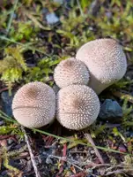
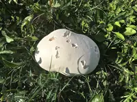
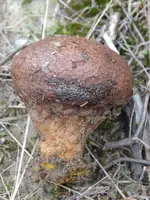

橘黄硬皮马勃
Scleroderma citrinum · Common earthball
又名 硬皮马勃
常见硬皮马勃科⚠️ 有毒
资料记载为有毒蘑菇。
同一种蘑菇在不同地区、不同成熟度可能有不同记载，且存在大量肉眼无法区分的相似种。请勿凭本页信息判断真实蘑菇能否食用。野生蘑菇不采、不买、不吃。
怎么认
- 外皮厚而硬，黄褐色，表面有龟裂状鳞片
- 切开内部为紫黑色，可食马勃内部为纯白
- 没有菌柄，直接贴地生长
识别要点由 AI 据公开资料整理，未经真菌学家审校，仅供学习，不能作为采食依据。
基础数据
- 科
- 硬皮马勃科
- 子实层
- 孢体
- 长在哪
- 土生
- 多大
- 3–10 cm（整体大小）
- 遇见率
- 常见
- 生境
- 酸性土、苔藓地
容易认错

网纹马勃网纹马勃外皮薄软、白色带小刺、内部白；硬皮马勃外皮厚硬黄褐、内部紫黑
大马勃大秃马勃巨大纯白光滑；硬皮马勃小、黄褐色龟裂
豆马勃彩色豆马勃有假根柄、切开是豆状小包；硬皮马勃无柄、内部均匀紫黑趣味知识
切开是关键：真马勃内部幼时纯白均质，硬皮马勃则是紫黑色的孢子团，外皮也厚硬得多。
在图鉴里打开 · 可叠加筛选与照片 ›